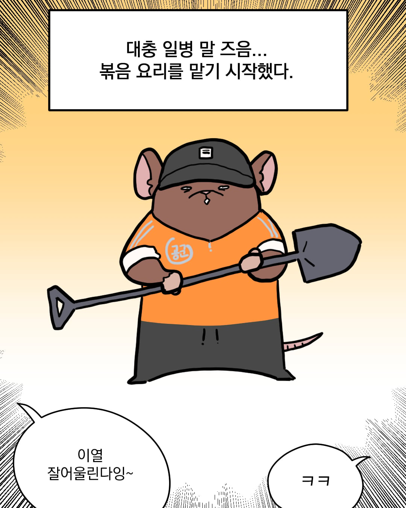
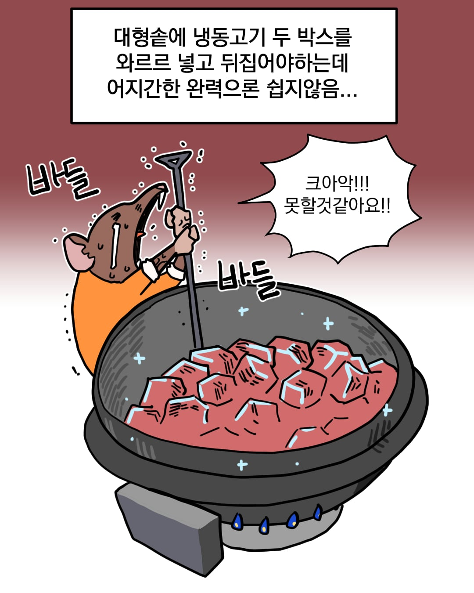
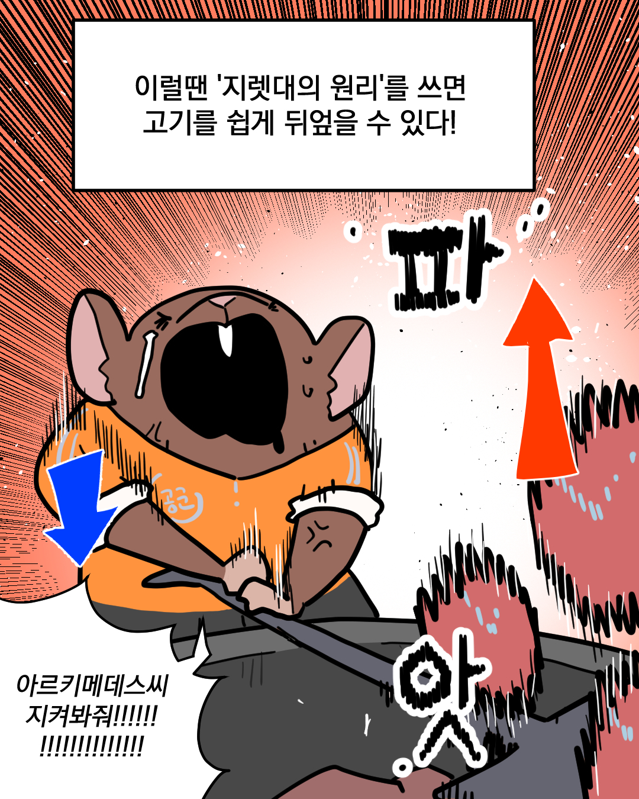
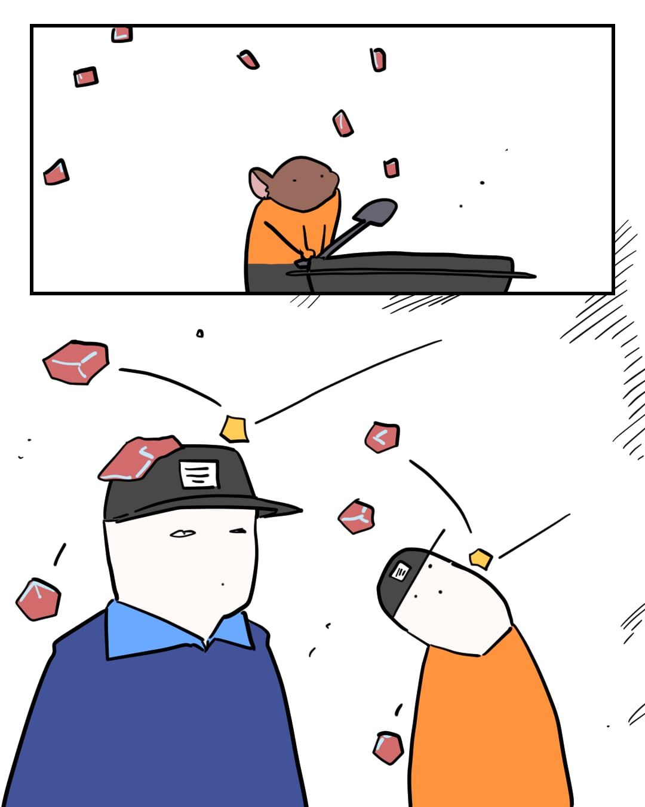
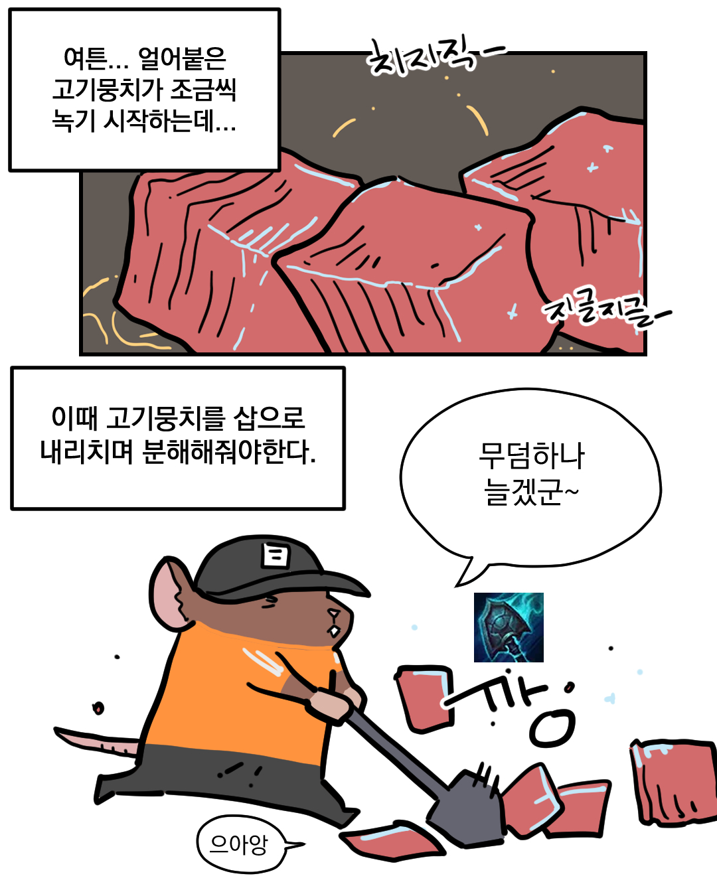
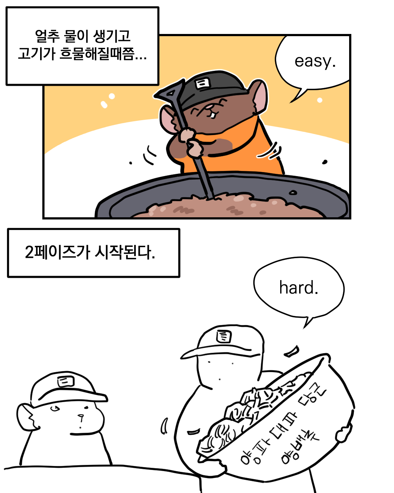
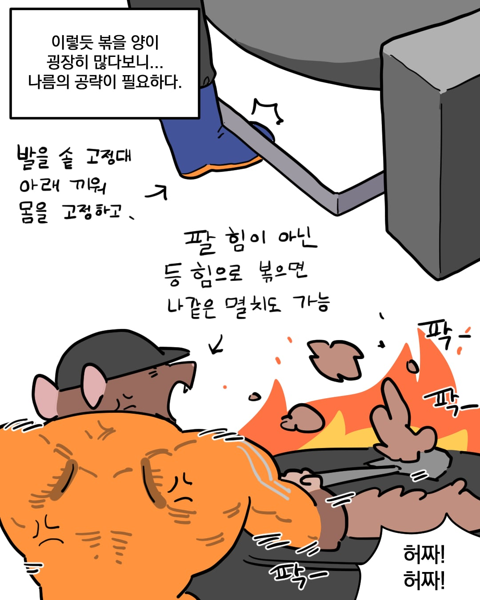
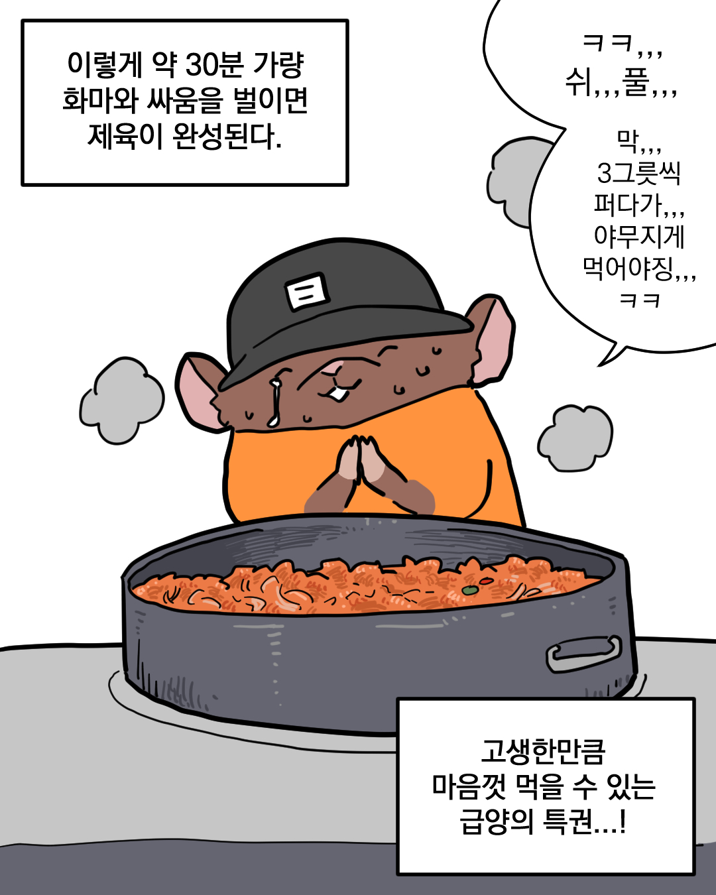
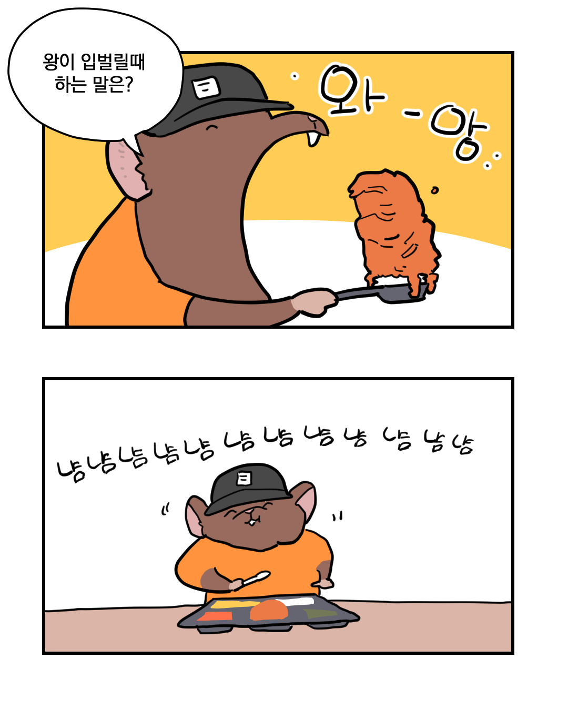
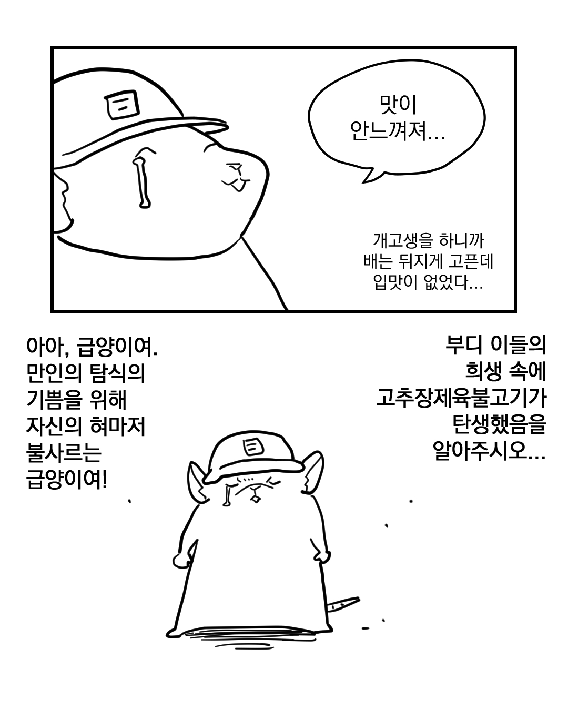
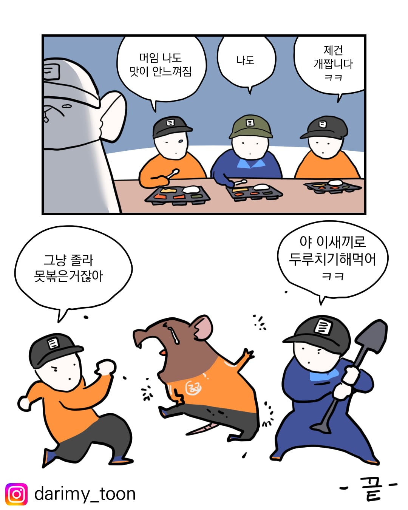
감상해주셔서 감사합니다.
인스타도 많관부...











감상해주셔서 감사합니다.
인스타도 많관부...
댓글
수집 당시 댓글 27개
헬마왕 · 3 일 전
ㅋㅋㅋㅋ 만화 재밌게 잘 그리네
맥스신 · 3 일 전
논산은 밥 잘나오던데
관음증 · 3 일 전
콩쿤
이게왜진짜임 · 2 일 전
나도 공군 급양출신인데 ㅋㅋㅋㅋㅋ 이게 고기를 볶는건지 삶는건지 헷갈릴때 비로소 제육볶음이 완성됨
청사과맛사탕 · 2 일 전
저거 썰 때가 진짜긴 해 철장갑 ㅋㅋㅋ
년경력전차장 · 2 일 전
그냥 못한 거였어?ㅋㅋㅋㅋㅋㅋ
게오르그 · 2 일 전
존나 신기한게 신병일때는 진짜 아무리 해도 못하겠고 이걸 삽으로 대체 어떻게 그렇게 빨리 뒤집을 수 있는지 이해도 못하겠고 개못했는데 한 일년 지나고는 엄청 수월하게 힘 안써도 대충 그냥 되더라
아포리즘 · 2 일 전
개인적으로 ‘고생한만큼 마음껏 먹을수있는 급양의 특권 ’ ‘세그릇씩 퍼다가 야무지게 먹어야지‘ 이부분은 빼는게 좋다고생각함 내용구성적인측면에서 꼭필요한 내용도아닐뿐더러 요즘같이 도덕성무결성을 엄청 엄밀히따지는세상에서 위험할수도있는 발언이라고 생각함
킹꼬리원숭이 · 2 일 전
니가말하는 위험할수도있는 이유가 너야
절제된야릇함 · 2 일 전
김치 · 2 일 전
글쓴아 이딴 개소리 듣지 말고 걍 그리고 싶은 대로 그려라
혼세마왕 · 2 일 전
?? 고생했는데 많이 먹어야지 먹는걸로 쪼잔한 새끼네
아포리즘 · 2 일 전
?? 취사병만이 유독 고생하는 보직임? 다른보직 다른병들도 다 나름의 자리에서 똑같이 고생함 본인이 만들었다고해서 그걸마음대로 처리할권리가 생기는게아님 어느정도 여유가있더라도 배급량이 정해져있는걸 누군가만 많이받아가면 누군가는 적게받을수밖에없음 특권은 대체 누가준 특권임? 멍청한소리는 안하니만못함
혼세마왕 · 2 일 전
친구들 만나서 소주 마신 잔 수, 고기 먹은 그람수 다 따져서 엔빵할 사람이네 엑셀이니 뭐니 인터넷 괴담인줄 알았더만 넌 따짐 당해도 불만 없어라 힘내라
아포리즘 · 2 일 전
멍청한비유도 안하느니만 못함
안녕하수수깡 · 2 일 전
ㅠㅗㅣㅏㅜㅗ · 2 일 전
실례합니다 · 2 일 전
이런말은 dm으로보내던가 이렇게 남기면 그치그치 그그치치 하면서 동조세력생기는거라고
charlote · 2 일 전
없는 위험을 기어이 만들어내려고 애쓴다
인사이드로 · 2 일 전
목 졸라 버리고싶네 존나 개꼰대같애
GTA · 2 일 전
어이어이 그런 위험한 말을 쓰다니
데크크래프트 · 2 일 전
개인적으로 그런 첨언도 별로 필요 없다고 생각함...
뜨거운아아하나주세요 · 2 일 전
의외로 멸치볶음 어렵고 콩나물 무침이 힘듬
도주이니빙시가 · 2 일 전
나는 사단 정비대 취사병출신이였는데 유격뜀, 혹한기 두번뜀. 사격 두번감. 병기본 구급법만 시험침. 그런데 그중에서 레전드인게 자대 가자말자 한달반만에 왕고. 이 이야기를 하면 사람들이 전부 ??? 됨
퐈이아픽스페페로니 · 2 일 전
진짜 별별보직 다해봤는데 취사병들이 제일 고생하더라 휴가더준다 짬시간외엔 쉰다하는데 애넨 매일매일이 전쟁이더라
픽돌이 · 2 일 전
설거지다 하고 휴게실에서 쉴때 꼭 누가오더라
교회오빠로니콜먼 · 2 일 전
어디서 많이 본 쥐돌이다 했더니 그 에오지 스케이븐 만화 그리던 작가네ㅋㅋㅋㅋ